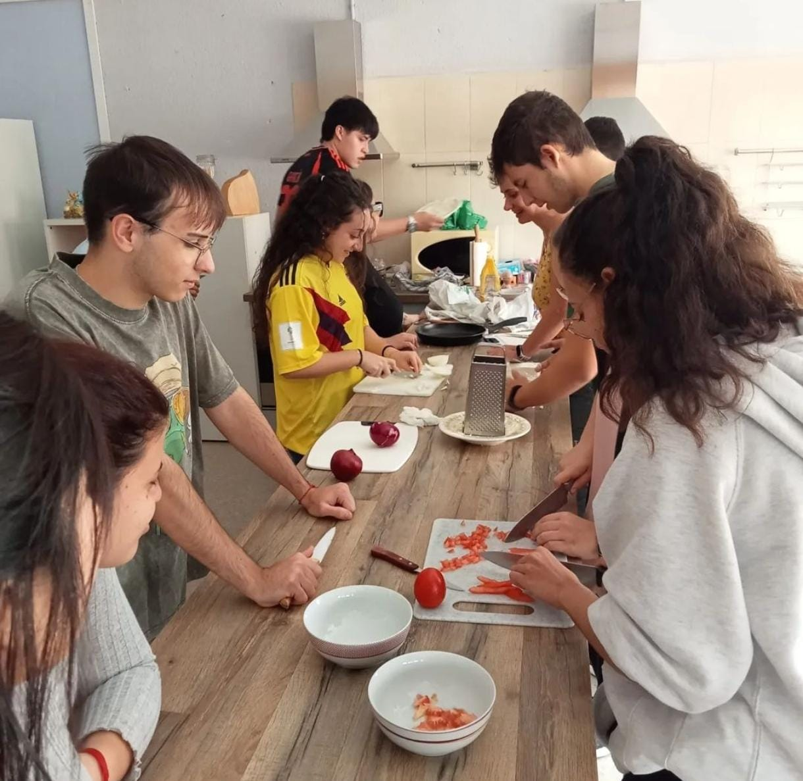

27/09/24
Visita a la Fundación Orange para preparar el material que usaremos en las charlas
8/10/24
Congreso acerca de fermentación y microbiota

11/10/24
Taller de cocinado por el día de la Hispanidad
7/11/24
Charla impartida a los padres del CEIP Bolivia sobre alimentación y hábitos saludables
21/11/24
Visita a Biocultura en el que asistimos a un Show cooking
29/11/24
Visita a la fundación Orange donde seguimos preparando el material para las charlas